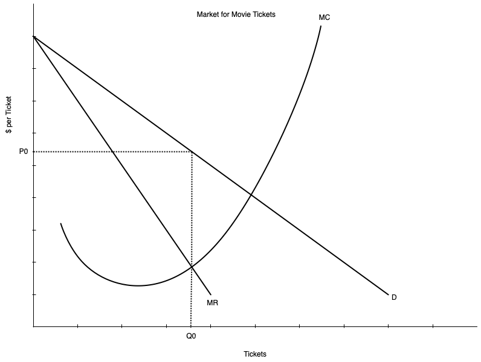
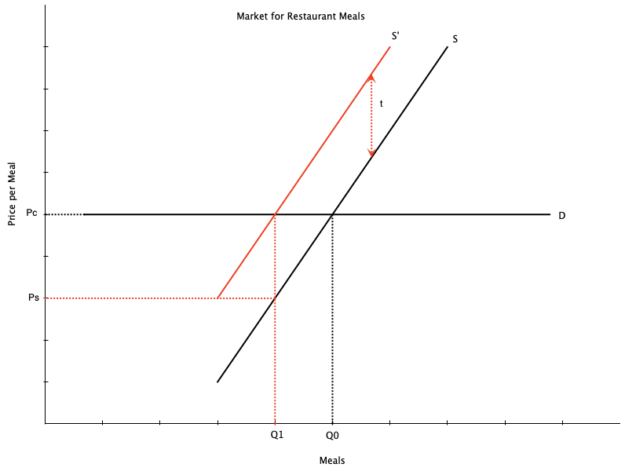
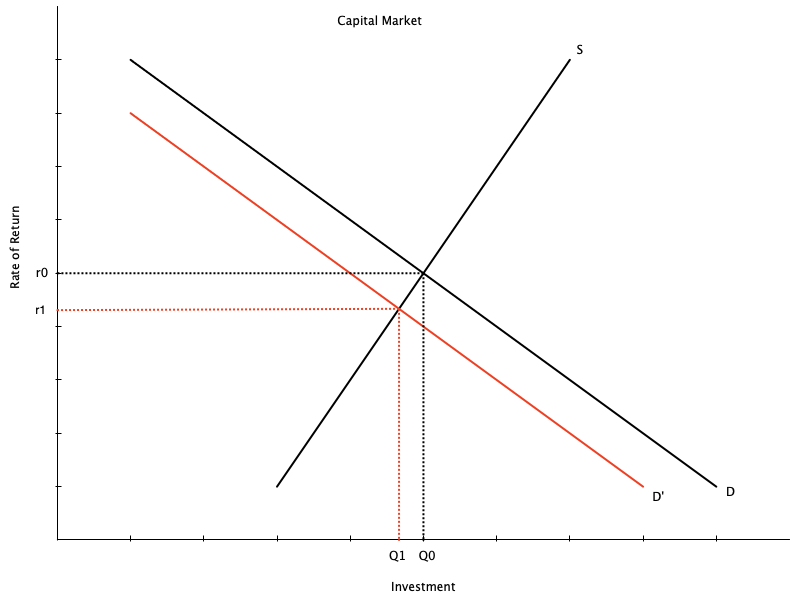
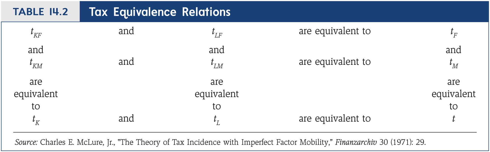
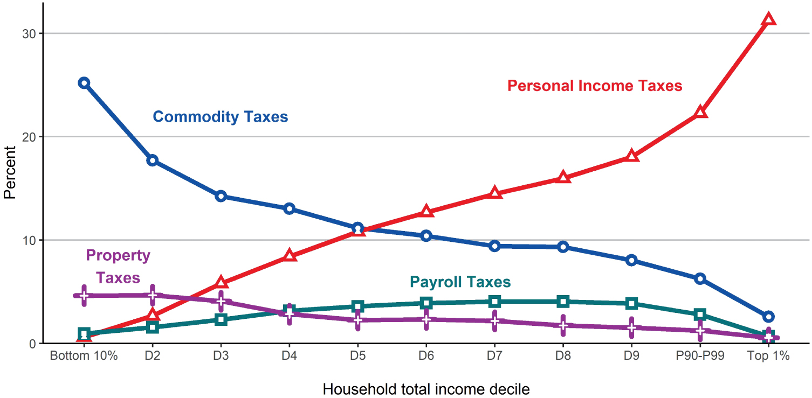
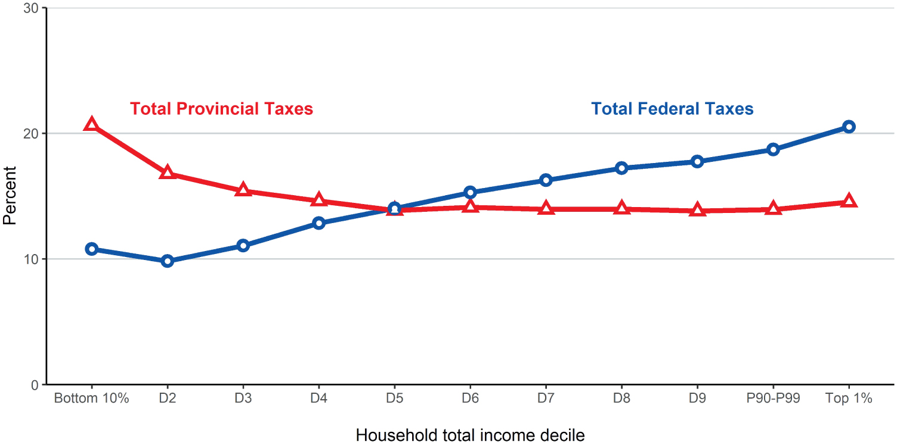

Tax Incidence
EC313 - Public Economics: Taxation
Justin Smith
Wilfrid Laurier University
Fall 2025

Goals of This Section
Goals of This Section
Outline different types of taxes
Discuss different between statutory and economic incidence of a tax
Show how tax incidence depends on elasticities of supply and demand
Expand on tax incidence in various markets
Types of Taxes
Introduction
There are many different types of taxes
Taxes can have different goals
- Raise revenue for government spending
- Change behaviour of individuals or firms
- Redistribute resources
They can also have different bases, structures, and rates
- Base: what is being taxed (e.g. income, consumption, property)
- Structure: how the tax is applied (e.g. progressive, regressive, flat)
- Rate: how much is being taxed (e.g. percentage, fixed amount)
Below we cover some of the most common types of taxes
Taxes on Income
Income Tax: tax on income earned during the year
Can be levied on individuals or corporations
For individuals, includes but not limited to
- Labour market earnings
- Capital gains
- Investment income (e.g. from dividends, interest, property)
- Pensions and retirement income (e.g. RRSPs)
- Some government benefits (e.g. employment insurance)
- Other taxable benefits (e.g. premiums paid by employer for group life insurance)
Taxes on Income
For corporations, includes but not limited to
- Active business income from sales or goods and services
- Investment income
- Capital gains
- Some government grants
- Depends on the size of your business
- Small business pay a lower rate
Payroll Taxes
Payroll Taxes: taxes levied on employment income
- Paid by both employers and employees
Used to finance social insurance and public pension programs
- Examples: Employment Insurance (EI), Canada Pension Plan (CPP), worker compensation
Payroll taxes vary by province
- Some charge a health tax (e.g. BC Employer Health Tax)
- Manitoba charges a levy for health and postsecondary education
These are different from the general income tax
Consumption Taxes
Consumption Tax: a tax paid on consumption of goods and services
Taxes generally charged by a seller at point of sale
- They remit these funds to the government
Examples:
- Sales tax (e.g. GST, HST, PST)
- Excise taxes (e.g. gasoline, alcohol, tobacco)
- Tariffs (tax on imports)
Wealth Taxes
Wealth Taxes: taxes on the value of an asset
Typical wealth taxes include
- Property tax (tax on value of land/buildings)
- Estate tax (tax on value of estate at death)
- General wealth tax (tax on total value of assets owned)
Estate taxes and general wealth taxes are not used in Canada
Property taxes are a major source of revenue for municipal governments
Statutory vs Economic Incidence of a Tax
Introduction
The question of who “pays” a tax is more complicated than it seems
Example: in Canada, there is a federal $0.10/litre tax on gasoline
- Gasoline stations include this in their price
- They remit the tax to the government
- Does the seller or the consumer pay?
This section will clarify who pays a tax
Separate between statutory and economic incidence of a tax
My view: this is the most important concept we teach in this program
Statutory vs Economic Incidence of a Tax
Statutory Incidence: who is legally responsible for paying the tax to the government
In the gasoline tax example, the statutory incidence is on the gasoline station
- They send a cheque to the government
Economic Incidence: the change in real income brought about by the tax
In the gasoline tax example, the economic incidence can be shared between the gasoline station and the consumer
- The gasoline station may less revenue per litre sold
- The consumer may pay a higher price per litre purchased
Statutory vs Economic Incidence of a Tax
Example: $0.10/litre tax on gasoline
Before tax is imposed, suppose price is $1.00/litre
- Consumers pay $1.00/litre, gas station receives $1.00/litre
Then government levies $0.10/litre tax on gasoline station
- Suppose gasoline station raises price to $1.10/litre
- Consumer pays $1.10/litre
- Gas station keeps $1.00/litre, remits $0.10/litre to government
In this case, the consumer bears the entire economic incidence of the tax
- Gasoline station receives same revenue per litre as before tax
- Consumer pays $0.10/litre more than before tax
Statutory vs Economic Incidence of a Tax
Example 2: $0.10/litre tax on gasoline
Same $0.10/litre tax on gas station
- Suppose gas station raises price to $1.05/litre
- Consumer pays $1.05/litre
- Gas station keeps $0.95/litre, remits $0.10/litre to government
In this case, the consumer and gas station share the economic incidence of the tax
- Gas station receives $0.05/litre less than before tax
- Consumer pays $0.05/litre more than before tax
Statutory vs Economic Incidence of a Tax
Key lesson is that statutory incidence does not determine economic incidence
- In example, statutory incidence is always on the gas station
- Economic incidence depends on how much of the tax is passed on to consumers in the form of higher prices
- Gas station could pass on all, some, or none of the tax to consumers
Statutory incidence says nothing about economic incidence
To determine economic incidence, we need to look at underlying economic forces
Commodity Taxes in Partial Equilibrium Models
Unit Tax on Sellers - Graphical
Take gasoline tax example one more time
On right is demand and supply of litres of gasoline
Without tax, price and quantity are determined where demand and supply are equal
Price is \(P_{0}\)
Quantity is \(Q_{0}\)
Unit Tax on Sellers - Graphical
Now government levies a per unit tax \(t\) (e.g. $0.10/litre) on gasoline
Tax is levied on sellers (statutory incidence)
This shifts the supply curve up by the amount of the tax
- New supply curve is \(S'\)
- At each quantity, sellers want to charge \(t\) more to cover the tax
New equilibrium is where \(S'\) intersects \(D\)
- Determines price paid by consumers
Unit Tax on Sellers - Graphical
The tax introduces a tax wedge
- Difference between what consumers pay and what producers receive from a transaction
Consumers pay the equilibrium price \(P_{c}\)
- Price includes the tax
Producers receive \(P_{s} = P_{c} - t\)
- They remit \(t\) for every unit sold
Quantity falls to \(Q_{1}\)
Unit Tax on Sellers - Graphical
In example above, economic incidence is shared equally between consumers and producers
- Consumers pay \(P_{c} - P_{0}\) more than before tax
- Producers receive \(P_{0} - P_{s}\) less than before tax
- These amounts are equal
Equal economic incidence is specific to this example because supply and demand have the same slope
In general, economic incidence depends on the elasticities of supply and demand
A more elastic demand curve means consumers bear less of the economic incidence
- Higher elasticity means consumers can switch to other goods when price changes
A more elastic supply curve means producers bear less of the economic incidence
- A firm with higher elasticity can alter production easily when prices change
Unit Tax on Sellers - Graphical
Graph to the right shows a more inelastic demand curve
After tax consumers pay \(P_{c}\)
Producers receive \(P_{s} = P_{c} - t\)
But \(P_{c} - P_{0}\) is now larger than \(P_{0} - P_{s}\)
Inelastic demand means consumers less able to substitute
They absorb more of the economic incidence
Unit Tax on Sellers - Graphical
In extreme with perfectly inelastic demand, consumers bear entire economic incidence
- Perfect inelastic demand means complete inability to substitute
After tax consumers pay \(P_{c} = P_{0} + t\)
Producers receive \(P_{s} = P_{c} - t = P_{0}\)
No change in quantity
- Since consumers demand \(Q_{0} = Q_{1}\) at any price
Unit Tax on Sellers - Graphical
Now imagine a more inelastic supply curve
- Firms less able to adjust quantities when prices change
After tax consumers pay \(P_{c}'\)
Producers receive \(P_{s}' = P_{c}' - t\)
\(P_{0} - P_{s}'\) is larger than \(P_{c}' - P_{0}\)
Firms absorb more of the economic incidence
They are less able to adjust production to avoid the tax
Unit Tax on Sellers - Math
We can show the same result mathematically
Use linear inverse demand and supply curves with clean numbers
\[\text{Demand: } P_{c}=14-Q_{c},\quad \text{Supply: } P_{s}=2+Q_{s}\]
- Equilibrium without tax is where \(P_{s}=P_{c} = P_{0}\), \(Q_{c}=Q_{s}= Q_{0}\)
\[ 14-Q_{0}=2+Q_{0} \] \[ 12 = 2Q_{0} \Rightarrow Q_{0}=6 \]
- Sub \(Q_{0}\) into either equation to get \(P_{0}\)
\[ P_{0} = 14 - 6 = 8 \]
Unit Tax on Sellers - Math
Now introduce a per unit tax \(t=4\) on sellers
In equilibrium, \(P_{s} + t = P_{c}\) and \(Q_{c} = Q_{s} = Q_{1}\)
- There is a wedge between what consumers pay and what producers receive
Substituting in the equations for demand and supply
\[ 14 - Q_{1} = 2 + Q_{1} + 4\] \[ 14 - Q_{1} = 6 + Q_{1} \Rightarrow Q_{1} = 4 \]
- Sub \(Q_{1}\) into either equation to get \(P_{c}\) or \(P_{s}\)
\[ P_{c} = 14 - 4 = 10 \] \[ P_{s} = 2 + 4 = 6 \]
Unit Tax on Sellers - Math
Key things to take away when the tax is introduced
- Quantity falls from \(Q_{0}=6\) to \(Q_{1}=4\)
- Consumers pay \(P_{c}=10\), which is \(10-8=2\) more than before tax
- Producers receive \(P_{s}=6\), which is \(8-6=2\) less than before tax
- Economic incidence is shared equally between consumers and producers
Example is specific to when demand and supply have the same slope
In general, economic incidence with linear demand and supply and a unit tax depends on elasticities of supply and demand
\[ \Delta P_{c} = P_{c} - P_{0} = \frac{\varepsilon_s}{\varepsilon_s + |\varepsilon_d|}t, \quad \Delta P_{s}= P_{0} - P_{s} = \frac{|\varepsilon_d|}{\varepsilon_s + |\varepsilon_d|}t\]
- \(\varepsilon_s = \frac{dQ_s}{dP_s}\frac{P}{Q}\) is elasticity of supply and \(\varepsilon_d = \frac{dQ_c}{dP_c}\frac{P}{Q}\) is elasticity of demand
Unit Tax on Buyers - Graphical
More rarely, taxes are levied on buyers of goods and services
We can use the same graphical tools to examine this case
Key lesson is that economic incidence does not depend on whether the tax is levied on buyers or sellers
Unit Tax on Buyers - Graphical
Now government levies a per unit tax \(t\) (e.g. $0.10/litre) on gasoline
Assume gas tax is levied on buyers (statutory incidence)
This shifts the demand curve down by the amount of the tax
- New demand curve is \(D'\)
- At each quantity, buyers want to pay \(t\) less to cover the tax
New equilibrium is where \(S\) intersects \(D'\)
- Determines price received by the seller
Unit Tax on Buyers - Graphical
Notice that \(P_{s}\) and \(P_{c}\) are the same as when the tax was levied on sellers
- Producers receive \(P_{s}\)
- Consumers pay \(P_{c} = P_{s} + t\)
- Quantity falls to \(Q_{1}\)
In this case, the slopes are equal so the burden is shared
Changes in elasticities affect economic burden in the same way
Unit Tax on Buyers - Math
- The math is exactly the same as when the tax is levied on sellers
\[\text{Demand: } P_{c}=14-Q_{c},\quad \text{Supply: } P_{s}=2+Q_{s}\]
Tax is \(t=4\) on buyers
In equilibrium, \(P_{s} = P_{c} - t\) and \(Q_{c} = Q_{s} = Q_{1}\)
Algebra is same as we did above, so we get the same results
\[ P_{c} = 10 \] \[ P_{s} = 6 \]
Unit Taxes - Takeaways
Statutory incidence does not determine economic incidence
Economic incidence depends on elasticities of supply and demand
- More elastic demand means consumers bear less of the economic incidence
- More elastic supply means producers bear less of the economic incidence
Economic incidence does not depend on whether the tax is levied on buyers or sellers
Ad Valorem Taxes
So far we have only considered unit taxes
- A fixed amount per unit sold (e.g. $0.10/litre)
More common are ad valorem taxes
- A percentage of the price (e.g. 13% HST on most goods and services)
Ad valorem taxes create a tax wedge that increases with the price
- Higher priced goods have a larger tax wedge
As before
- Economic incidence depends on elasticities of supply and demand
- Economic incidence does not depend on whether the tax is levied on buyers or sellers
Ad Valorem Taxes
Analysis is similar to unit tax except supply curve shifts up and becomes steeper
If tax is levied on buyers, demand curve shifts down and becomes flatter
Still a wedge between what consumers pay and what producers receive
Economic burden on sellers decreases with supply elasticity
Economic burden on buyers decreases with demand elasticity
Unit Tax on a Monopolist
- So far we have only considered perfectly competitive markets
- What happens when there is only one seller in the market?
- A tax increases marginal cost, so the monopolist produces less
- Effects of the tax are potentially different from competitive markets
Quantity will fall
Price paid by consumers will rise
But, price received by the monopolist may rise or fall
- Depends on cost structure and demand elasticity
Unit Tax on a Monopolist

Graph shows pre tax equilibrium in a monopoly
ATC curve omitted for graph clarity
Example: market for movie tickets
- Dominated by a couple of firms
- Not strictly a monopoly but close enough
Equilibrium is where \(MR = MC\)
- Price is \(P_{0}\)
- Quantity is \(Q_{0}\)
Unit Tax on a Monopolist
Government levies a per unit tax \(t\) on each ticket sold
This shifts the cost curves up by the amount of the tax
- New marginal cost is \(MC'\)
Equilibrium is where \(MR = MC'\)
- Price paid by consumers is \(P_{c}\)
- Price received by monopolist is \(P_{s} = P_{c} - t\)
- Quantity is lower at \(Q_{1}\)
Consumers bear more of the tax if
- Demand is inelastic
- Marginal cost is relatively flat
Taxes on Factor Markets in Partial Equilibrium Models
Introduction
So far we have only considered taxes on goods and services
Taxes can also be levied on factors of production
- Labour
- Capital
Taxes affect prices paid for and received by those factors
- Example: payroll taxes affect wages paid and received
Taxes also affect quantities of factors employed
Analysis is the same as taxes on goods and services
- Only difference is that firms are buyers and households are sellers
Payroll Tax on Workers
Suppose government levies a payroll tax \(t\) on workers
- Example: Employment Insurance (EI) premiums paid by employees
This shifts the supply curve of labour up by the amount of the tax
- At each quantity, workers want to be paid \(t\) more to cover the tax
Creates wedge between what workers are paid and what they keep
- Firms now pay \(W_{f}\)
- Workers receive \(W_{w} = W_{f} - t\)
Payroll Tax on Workers
Incidence again depends on supply and demand elasticity
A more inelastic supply curve means workers bear more of the economic incidence
- They are less able to change work hours when wages change
- Makes them stuck in a job, so they bear more of the tax
A more inelastic demand curve means firms bear more of the economic incidence
- They are less able to substitute between labour and other inputs
- Makes number of workers inflexible, so they bear more of the tax
Does not matter if tax is levied on workers or firms
- In reality payroll taxes are often levied on both
Capital Taxation
Labour is not the only input into production
Capital is also used
- For this analysis, think of capital as the money used to finance machines, factories, etc
Capital owners earn a return on investments, and that can be taxed
The analysis of taxing capital is the same as for labour
Except that the rate of return (\(r\)) is the price
Total investment (dollars) is the quantity
Firms are the buyers, people with money are the suppliers
Capital Taxation
A key consideration in the analysis is capital mobility across countries
- The ease with which people can move money and invest around the globe
If capital is perfectly mobile, the buyers of capital bear the entire burden
Perfect mobility means a perfectly elastic supply curve
The price is set at the global rate of return
When supply is perfectly elastic, buyers bear the whole tax burden
In reality, capital is mobile but not perfectly
- Buyers and sellers are likely to bear some of the burden of capital taxation
Taxes on Profits and Land
Governments can also levy taxes on economic profits
- Economic profits: profits above a normal rate of return
These types of taxes are borne entirely by firms
- Maximizing untaxed profits and taxed profits yields the same prices and quantities
Consider a monopoly (because this would be a market where economic profits happen)
Without taxes, maximize
\[\Pi(q)=p(q)q-C(q)=(a-bq)q - cq = (a-c)q-bq^2\]
- Take the derivative with respect to \(q\)
\[(a-c)-2bq=0\]
Taxes on Profits and Land
- Solve for \(q\) to get the profit maximizing quantity
\[ q^*=\frac{a-c}{2b}\]
- Price is then
\[ p^*=a-bq^*=\frac{a+c}{2} \]
- With taxes, maximize
\[(1-t)\Pi(q)=(1-t)(p(q)q-C(q))=(1-t)((a-c)q-bq^2)\]
Taxes on Profits and Land
- Take the derivative with respect to \(q\)
\[(1-t)((a-c)-2bq)=0\]
Which leads to the same prices and quantities
Means that the economic incidence of profit taxes is entirely on firms
- Profits go from \(\Pi(q^*)\) to \((1-t)\Pi(q^*)\)
Problem with these taxes is that they are hard to implement in practice
Taxes on Land
Historically there were taxes on only land
- As opposed to modern property taxes that also tax buildings
When land is taxed the incidence is entirely on current owners
- The value of the land drops by the amount of the current and future tax obligations
Can see this by looking at the value for a piece of land
Without taxes, the value of land is the present value of future rents
\[ P_R = \sum_{t=0}^{T} \frac{R_t}{(1+r)^t} \]
Taxes on Land
- If there is a tax \(u_t\) on land, the value becomes
\[ P'_R = \sum_{t=0}^{T} \frac{R_t-u_{t}}{(1+r)^t} = \sum_{t=0}^{T} \frac{R_t}{(1+r)^t} - \sum_{t=0}^{T} \frac{u_t}{(1+r)^t} \]
- The difference between \(P_R\) and \(P'_R\) is the present value of all future tax obligations
\[ P_R' - P_R = -\sum_{t=0}^{T} \frac{ u_{t}}{(1+r)^t} \]
When the tax is levied, the value of the land immediately drops by the tax obligation
- So it is borne by the current owner
General Equilibrium
Introduction
So far we have only considered partial equilibrium models
- One market at a time
It is informative, but incomplete
In reality, markets are interconnected
A tax in one market can affect other markets
Example: a tax on goods can affect labour market
- If people buy less, firms produce less
- Firms hire fewer workers
- Labour market is affected
General equilibrium models consider all markets simultaneously
A Tax on Goods and Services

Consider a unit tax on restaurants
For simplicity, assume restaurant meals have perfectly elastic demand
- People are very sensitive to the price and will cook at home if price rises
The full burden of the tax is on the restaurants
Quantity of meals falls because of the tax
A Tax on Goods and Services
But a restaurant cannot bear taxes
A restaurant is really a production process that combines labour and capital
- A production process cannot pay a tax
It is ultimately the workers and owners of capital that pay the tax
The tax on meals will filter down to the labour and capital markets
- Workers will get paid less
- Owners of capital will earn less
A Tax on Goods and Services
Consider the labour market for restaurant workers
The tax on meals shifts the demand for restaurant workers to the left
- Labour demand is derived partly from the demand for meals
- Less demand for meals means less demand for workers
The equilibrium wage falls and workers are paid less
Part of the burden falls on workers in the form of lower wages
A Tax on Goods and Services

Similar things happen in the capital market
The tax on meals shifts the demand for capital to the left
- Less demand for meals means less demand for capital
The equilibrium return to capital falls and owners are paid less
Part of the burden falls on owners of capital in the form of lower returns
A Tax on Goods and Services
The degree to which workers and owners of capital bear the burden depends on elasticities
More elastic labour supply means workers bear less of the burden
More elastic capital supply means owners of capital bear less of the burden
In our example, we assumed perfectly elastic demand for meals
- This meant that restaurants bore the entire burden of the tax
If consumer demand were less elastic
Consumers would bear some of the burden
Would affect other goods they consume
- Increase consumption of substitutes
- Decrease consumption of complements
- Decrease consumption of all goods via an income effect
A Tax on Goods and Services
General equilibrium analysis can get very complicated
Many interconnected markets
Changes in one market affect many others
Can affect markets vertically and horizontally
Vertically: factors of production
Horizontally: related goods (e.g. tax on coffee affects tea market)
Main lesson is still the same: statutory incidence does not determine economic incidence
Tax Equivalencies
In general equilibrium, different types of taxes can have the same economic incidence
- Example: a tax on labour income and a tax on consumption can have the same economic incidence
A policy maker would have options when it comes to which tax to levy
Consider an economy with
- Two commodities, food (\(F\)) and manufacturing (\(M\))
- Two factors of production, labour (\(L\)) and capital (\(K\))
Tax Equivalencies
A government could levy nine different types of taxes
- Food: tax on capital (\(t_{KF}\)), tax on labour (\(t_{LF}\)), tax on consumption (\(t_F\))
- Manufacturing: tax on capital (\(t_{KM}\)), tax on labour (\(t_{LM}\)), tax on consumption (\(t_M\))
- Both: tax on capital (\(t_K\)), tax on labour (\(t_L\))
- An income tax (\(t\))
Taxes levied on factors of production in one sector are Partial Factor Taxes
- In this case \(t_{KF}\), \(t_{LF}\), \(t_{KM}\), \(t_{LM}\)
Combinations of these taxes can be equivalent to other taxes
Tax Equivalencies
List of Equivalent Taxes
Harberger Model
Arnold Harberger studied tax incidence in general equilibrium
Basics of his model
Technology
- Capital and labour used in production
- Constant returns to scale
- Ease of substitution between capital and labour different between sectors
Factor suppliers
- Capital and labour perfectly mobile
- Returns to both are the same in both sectors
Market structure is perfecly competitive
Factors are in fixed supply
Consumers are all the same
Harberger Model
Suppose a tax on food (\(t_F\)) is introduced
- Price of food rises
- Consumers buy less food, more manufacturing
- Demand for labour and capital in food sector falls
- As labour and capital move to manufacturing, their returns fall
Strength of these effects depend on elasticities
- If food elasticity is high, consumers shift more to manufacturing
- Returns to labour and capital fall more for manufacturing to induce movement
- If food elasticity is high, consumers shift more to manufacturing
Harberger Model
Suppose an income tax (\(t\)) is introduced
- Use equivalencies table
- Income tax is equivalent to a combination of taxes on capital and labour
- Both are in fixed supply (perfectly inelastic) so they bear the whole burden
A tax on labour (\(t_L\)) is introduced
- Tax on labour in both sectors
- Labour supply is perfectly inelastic so it bears the whole burden
- No incentive to switch between sectors
Harberger Model
Finally, a partial factor tax on capital in manufacturing (\(t_{KM}\))
- Price of manufacturing rises
- Use less capital and labour
- As capital and labour leave, changes in their relative prices depend on how much is used
- Producers of manufactured goods use less capital and more labour
- Demand for capital falls, and so does relative price
- Cannot tell what the ultimate effect is on capital prices
- But labour price rises
- Price of manufacturing rises
Summary
Tax incidence is not necessarily contained to the market where the tax is levied
In general equilibrium, taxes can have far reaching effects
- Both vertically and horizontally
A full analysis requires consideration of all markets simultaneously
The key points to remember are
- Statutory incidence does not determine economic incidence
- Economic incidence depends on ability to substitute and avoid the tax
Quantifying Tax Incidence
Introduction
We have gone through the theory of tax incidence
Using data we can see who bears the burden of various taxes
Could do this with tax data
- Statistics Canada maintains the Longitudinal Administrative Databank (LAD)
- Not easy to use because it is confidential microdata
Can also use data from the SPSDM simulator
- Program maintained by Statistics Canada
- Snapshot of the Canadian tax and transfer system at a point in time
Partial Equilibrium

Average Tax Rates in Canada
Partial Equilibrium
Average Tax Rates by Source
Partial Equilibrium
Average Tax Rates by Level of Government
Partial Equilibrium
Canada maintains a progressive personal income tax system
- So tax rates rise with income
Commodity and property taxes are on their own regressive
- A regressive tax is one where tax rates fall with income
- Tax credits help offset the regressivity of these taxes (e.g. HST credit)
Payroll taxes are initially progressive but turn regressive
Federal taxes are more progressive than provincial taxes
- Federal taxes mainly come from personal income taxes
- Provincial taxes contain more commodity and property taxes
Partial Equilibrium
Progressivity in these graphs is based on annual income
- Lifetime income might be more appropriate if people consume based on lifetime resources
Redoing the graphs with lifetime income reduces regressivity
General Equilibrium
Evidence on the general equilibrium incidence of taxes is more limited
- Analysis is more difficult
Canadian researchers have looked at the tax incidence of the carbon tax in BC
- Use a Computable General Equilibrium (CGE) model
- A fancy model with many equations you need a computer to solve
Find that a carbon tax
- Lowers wages relative to capital income because labour is supply is inelastic
- Labour bears more of the burden than capital
- Tax is progressive because wages are a higher share of income for higher income households
Summary
Summary
Taxes are levied across the economy for various reasons
Who “pays” the tax is determined by economic incidence and is complicated
- Depends on ability to avoid the tax in both partial and general equilibrium
- Can be spread widely in a general equilibrium setting
Statutory incidence does not determine economic incidence
References
References
Rosen, Harvey S., and Lindsay M. Tedds, and Trevor Tombe, and Jean-Francois Wen, and Tracy Snoddon. Public Finance in Canada. 6th Canadian edition. McGraw-Hill Ryerson, 2023.
Gruber, Jonathan. Public Finance and Public Policy. 7th edition. Worth Publishers, 2022.
Finances of the Nation. https://financesofthenation.ca/